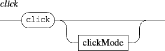
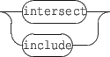

Next: 5. Time management messages
Up: 4. Common components messages
Previous: 4.3.3 The shadow effect
Contents
Index
4.4 The 'click' and 'select' messages
Warning: the click and select messages are deprecated and will be removed in a future version.
The click and select messages can be sent to any address with the form /ITL/scene/identifier where identifier is the unique identifier string of a scene component. They are intended to provide information about components relative positions: it returns a list of components identifiers that are 'under' the clicked component: z order of the components is used for the 'under' relationship.


- topleft, bottomright, topright, bottomleft, center: collects the components that are respectively under the top-left, bottom-right, top-right, bottom-left or center point of the target component. The clicked point is computed from the component bounding box.
- Sent without parameter, the click message is equivalent to click topleft.
Reply of the click message has the following form:

where 'identifier' is a component name. Note that 'identifiers' are sorted by decreasing z order.


- intersect: looks for the components that are under the clicked component and that intersect with its bounding box.
- include: looks for the components that are under the clicked component and that are included in its bounding box.
- Sent without parameter, the select message is equivalent to select intersect.
Reply of the select message is similar to click reply:

Next: 5. Time management messages
Up: 4. Common components messages
Previous: 4.3.3 The shadow effect
Contents
Index
Grame - INScore project